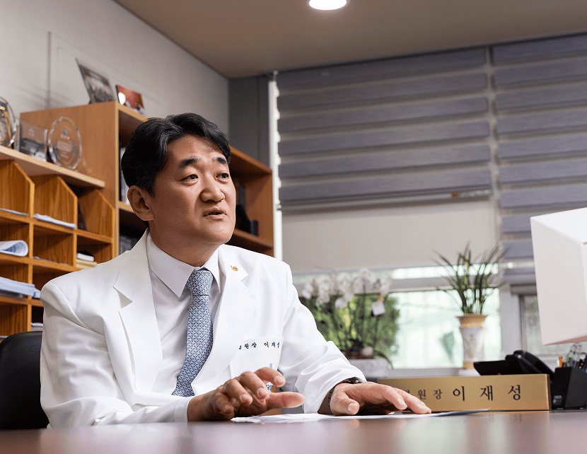
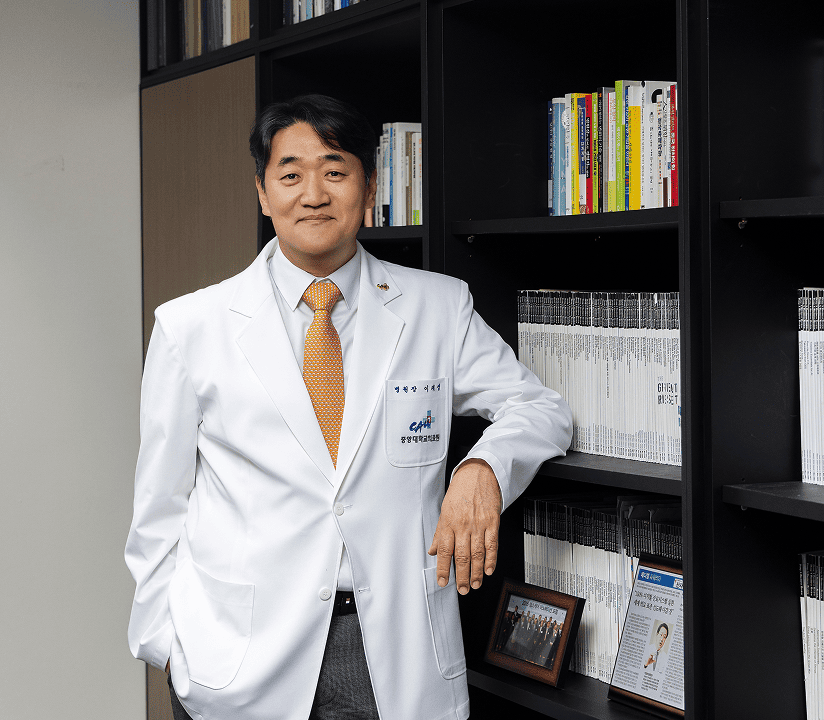
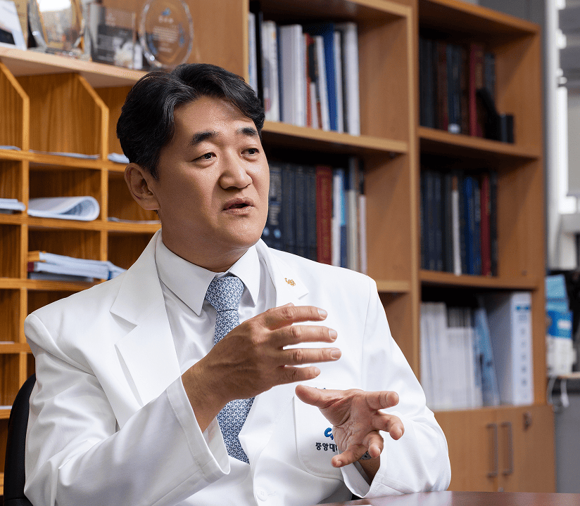
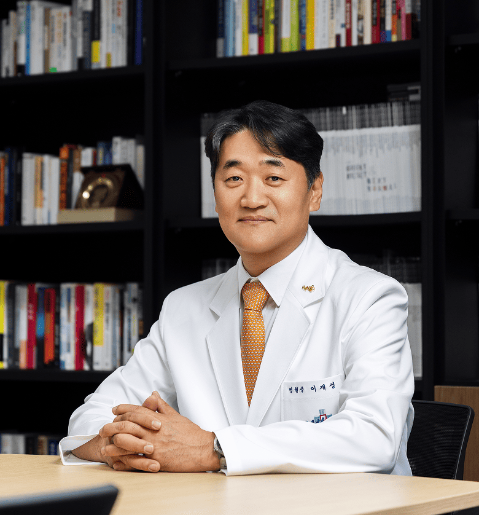

환자의 시선에서 살피며,
치료를 넘어 돌봄으로
이재성 병원장은 취임 이후 계속해서 ‘환자 중심의 병원’을 만들어 나가겠다고 말했다. 이에 대한 고민을 계속하다 보니 병원 입장, 즉 의료 서비스 제공자 입장에서만 생각해서는 한계가 있다는 사실을 깨닫고 반성하게 되었다고 한다.
“철저하게 환자의 입장에서, 환자들이 무엇을 원하고 어떠한 가치를 중요하게 여기는지를 제대로 파악해야만 진정한 환자 중심의 의료 서비스 실천이 가능할 것입니다. 이를 위해 일단 병원의 문턱을 낮추는 일부터 시작하려 합니다. 환자가 우리 병원을 찾게 하려면 어떻게 해야 할지를 고민하는 데서 나아가, 환자가 진짜로 원하고 필요할 때 진료를 받을 수 있도록 해야 할 것입니다. 외래 예약 시스템을 획기적으로 개선하는 등 환자 편의를 높이기 위한 방안들을 고민하겠습니다. 더불어 환자의 만족이 곧 의료진과 직원들의 자부심이 될 수 있도록 노력하겠습니다.”

이재성 병원장은 향후 중앙대병원이 중점적으로 추진해야 할 단기 핵심 과제로 권역 중증응급센터 및 6기 상급종합병원 지정, 2027년 연구중심병원 지정을 언급하며 이를 위해 구성원 전체가 만전을 기해야 함을 강조했다.
중장기적으로는 병원의 역할을 ‘치료(Cure)’에서 ‘돌봄(Care)’으로 확장하기 위한 노력이 필요하다는 뜻을 밝혔다. 그동안 얻은 다양한 데이터와 AI 기술을 접목하여 환자 맞춤형 헬스케어를 제공함으로써 보다 적극적으로 환자들의 ‘건강지킴이’ 역할을 하는 병원으로 변화해 나가겠다는 청사진을 제시했다.


다각도의 소통과 조직문화 개선으로
함께 만드는 더 나은 병원
이재성 병원장은 본인이 가진 가장 큰 장점 중 하나로 ‘소통’을 꼽으며, 투명하고 적극적인 소통을 통해 수평적 조직문화를 만들어 나가겠다고 밝혔다. “사실 저도 그랬지만 각자 본인의 일이 바쁘다 보니 우리 병원이 어떻게 운영되고, 변화해 나가고 있는지에 대해 관심을 가지기가 쉽지 않습니다. 그러나 병원이 더 나은 방향으로 발전하기 위해서는 여러 구성원들의 집단 지성이 필요하다고 생각합니다. 임상 과장 회의와 주요 보직자 회의 등을 통해 주요 정책들이 정해지면 그 결과를 메일을 통해 구성원들에게 전달하고 있는데요. 번거롭게 생각하기보다 조금 더 관심을 가져 주셨으면 합니다.
또한 기존에 다소 관료주의적으로 진행되었던 월례회의의 형식을 바꿔 ‘공감 Talk’이라는 이름으로 진행하고 있는데요. 이를 통해 여러 직원들의 다양한 목소리를 직접 듣고자 합니다. 병원 곳곳을 더 부지런히 찾아다니며 다양한 방식의 소통을 통해 직원들이 원하는 바를 파악하고, 우리 병원이 올바른 방향으로 갈 수 있도록 하겠습니다.”
이재성 병원장은 중앙대병원이 이미 수평적 조직문화로 변화하고 있다고 생각한다며, 의료원 차원에서 진행하고 있는 OKR과 자율적 혁신 활동을 통해 더 나은 조직문화를 만들어 나갔으면 한다고 말했다.
“직원들이 OKR과 자율적 혁신활동을 통해 스스로 업무 목표를 정하고 이를 달성하기 위해 방법을 구체화시키는 모습을 보며 대단하고 자랑스럽다고 생각했습니다. 이러한 과정을 통해 업무 만족도를 높일 수 있음은 물론, 개인과 조직 모두 긍정적인 방향으로 발전해 나가는 선순환 구조를 만들 수 있을 것이라 생각합니다.”
새로운 도약을 위한 변화의 시기,
모두의 노력이 필요한 때
이재성 병원장은 시시각각 변화하는 대내외 환경과 그 흐름 속에서 발생하는 여러가지 어려움을 극복하고 한 단계 더 도약하기 위해서는 현재에 안주해서는 안 된다고 말했다. 아울러 중앙대병원의 발전을 위해 현장에서 최선을 다하고 있는 구성원들을 독려했다.
“지금 같은 변화의 시기에는 많은 어려움이 따르기 마련이고, 여러모로 힘든 상황 속에서 직원분들께서 고군분투하고 있음을 알고 있습니다. 비록 지금은 조금 힘들고 어렵지만, 구성원 모두가 힘을 모아 서로를 다독이며 활기차게 일하다 보면 위기를 극복할 수 있을 것이라 믿습니다. 개인과 조직의 공동 발전을 위해 다 같이 힘을 합쳐 개선해 나간다면, 더 나은 미래를 그릴 수 있을 거라 생각합니다.”
마지막으로 이재성 병원장은 중앙대병원을 찾는 환자와 보호자들에게 감사의 인사와 함께 메시지를 전했다.
